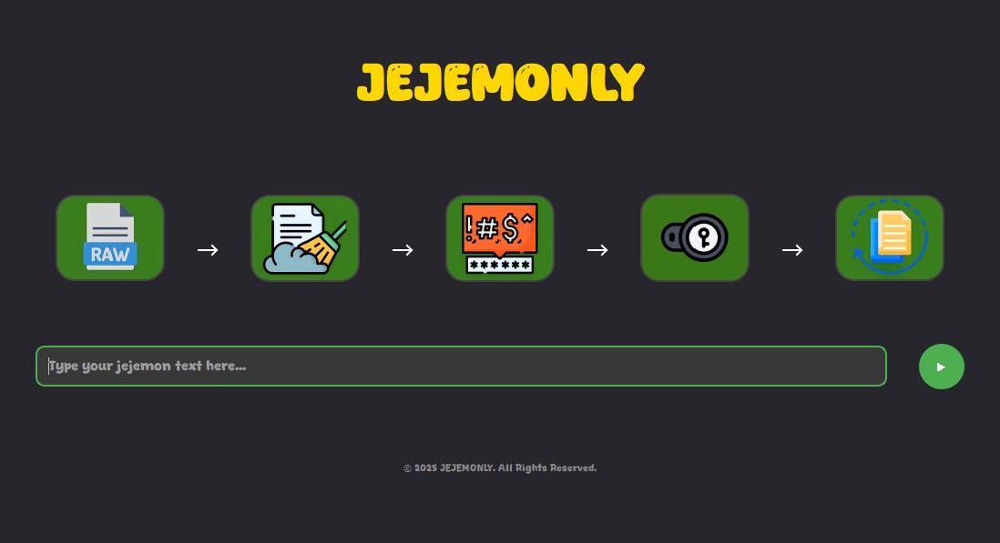
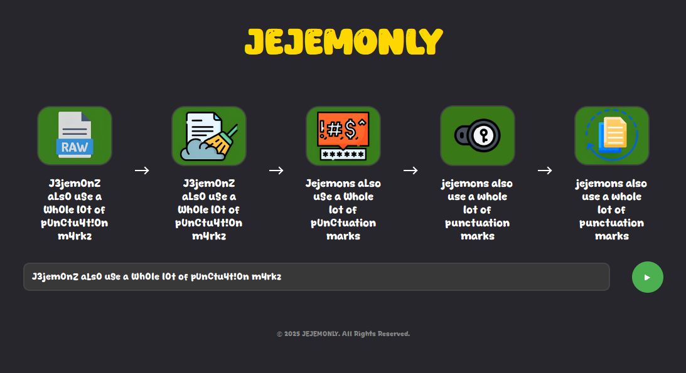
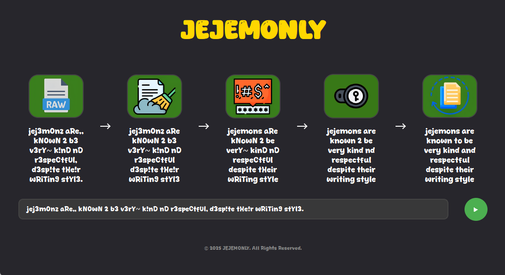
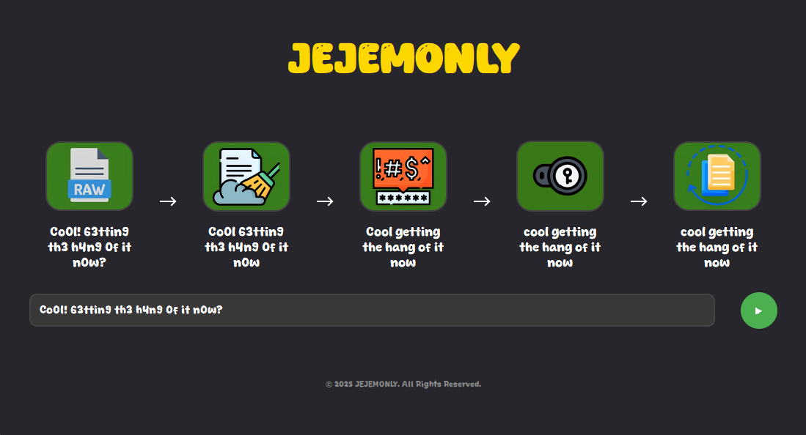
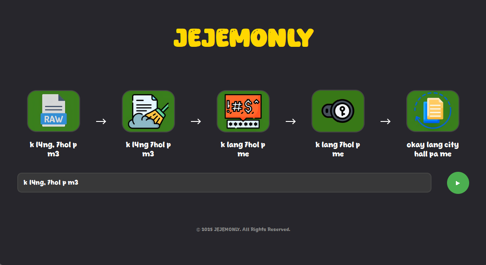

Introduction
Jejemonly is a desktop application designed to normalize Jejemon-style text into standard readable text. The system uses a step-by-step transformation process, making it useful for academic tasks like Natural Language Processing and text preprocessing.
Features
1. GUI-based interface using PyQt5
2. Step-by-step normalization process:
- Punctuation cleanup
- Character replacement
- Tokenization
- Final normalized output
3. Visual guide using custom fonts and images
4. Fun and interactive learning tool for NLP basics
Sample Screenshots





Logic behind it
The core logic of JejemOnly lies in its multi-step normalization pipeline designed to clean and convert Jejemon-style text into standard, readable language. Each step plays a specific role in reducing noise and restoring clarity:
Punctuation Evaluation
- Irregular punctuation marks are removed or replaced with proper punctuation.
- Ensures the sentence structure becomes more readable before deeper processing.
Character Replacement
- Jejemon text often uses numbers and symbols in place of letters (e.g., "h3ll0" → "hello").
- A mapping system replaces distorted characters with their normal equivalents based on a predefined lexicon.
Tokenization
- The cleaned text is split into tokens (words or phrases), making it easier to apply normalization rules per word.
- Helps prepare the text for matching with standard words.
Lexical Matching and Normalization
- Each token is checked against a dictionary or pattern rules to determine its closest standard equivalent.
- This includes using string similarity metrics (like edit distance) to handle misspellings and exaggerated word forms.
Final Output Generation
- The normalized tokens are reassembled into a clean, human-readable sentence.
- The output aims to retain the original intent while improving clarity and readability.